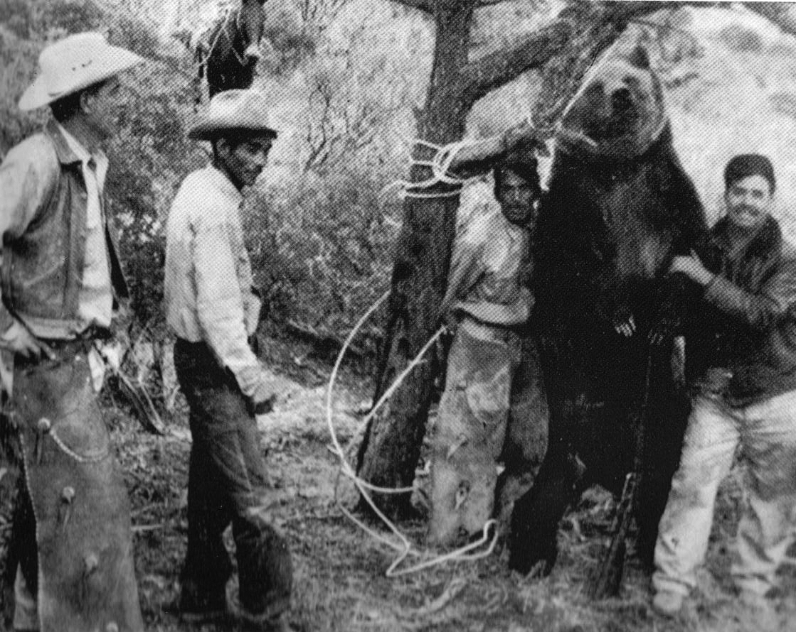
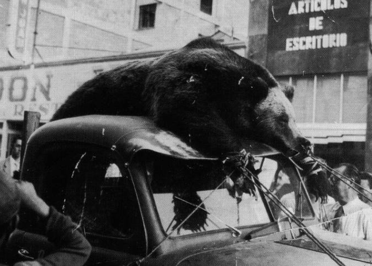
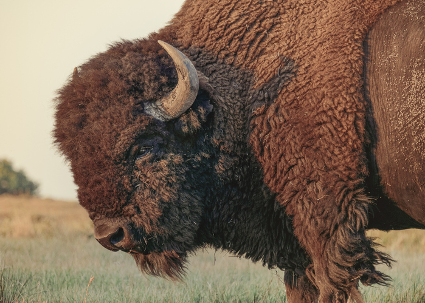
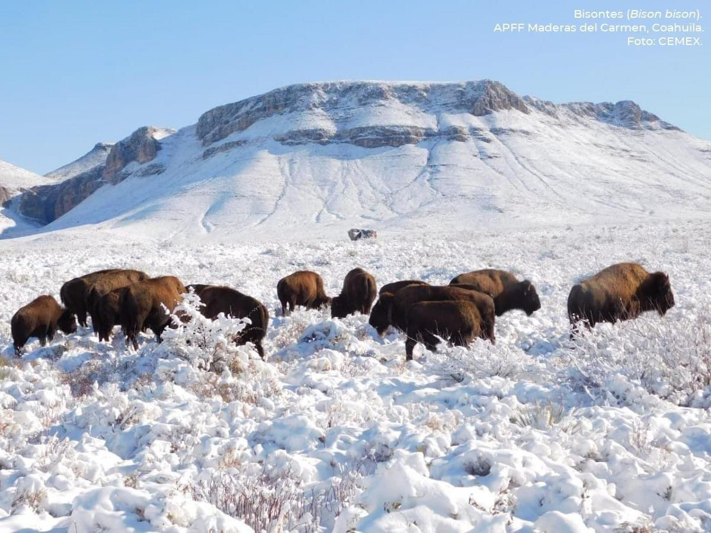
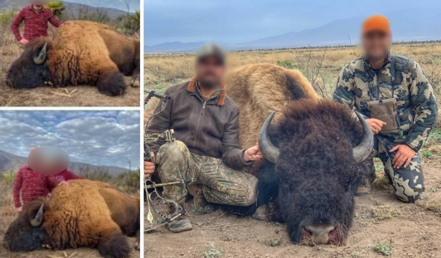
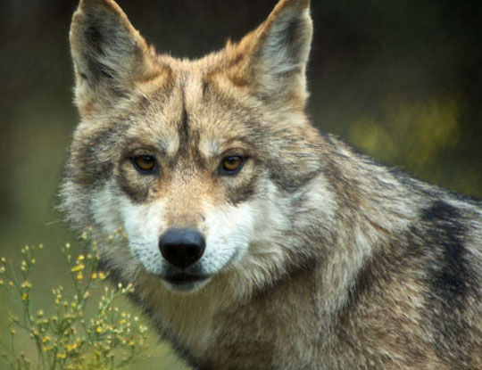
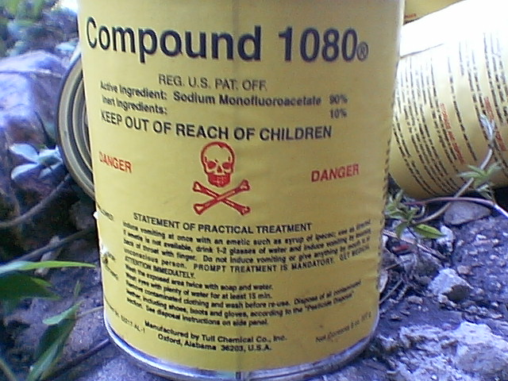
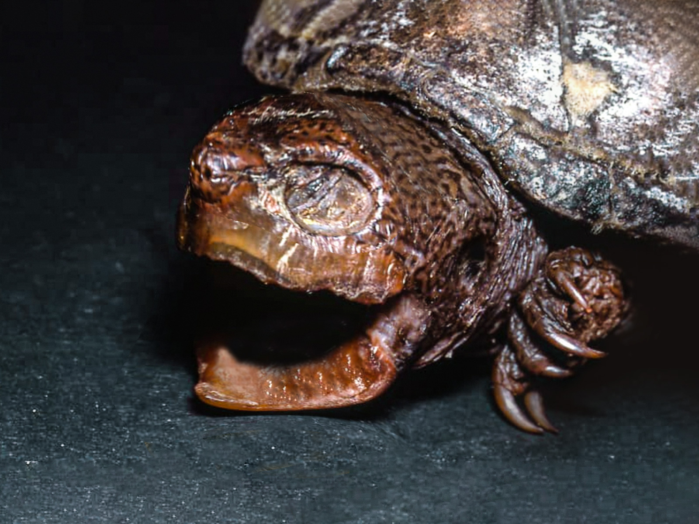
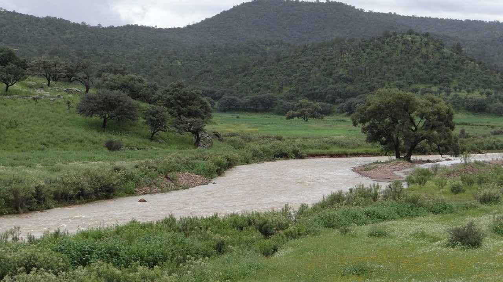

Oso Plateado (Ursus arctos nelsoni)
El oso grizzli mexicano, conocido también como oso plateado, fue la más grande especie de oso que alguna vez habitó en México, distribuyéndose en los estados de Coahuila, Chihuahua, Durango y Sonora. Tristemente, este maravilloso animal fue cazado hasta la extinción por los seres humanos.

El oso plateado era en realidad una subespecie del oso grizzli americano, sin embargo, debido a las diferencias geográficas de su ecosistema, presentaba una coloración diferente a la de los especímenes encontrados en Estados Unidos, mostrando un pelaje gris canoso brillante, lo que le valió el apodo de oso "argenteo", pues decían que su pelo brillaba como la plata.
Apesar de su aspecto majestuoso pero imponente, el oso plateado causó temor a los rancheros, quienes creían que su existencia suponía una amenaza para sus animales de granja, por lo que no tardaron en comenzar una campaña para su exterminio, por medio de trampas y veneno, lo que llevó también a la casi completa aniquilación del lobo mexicano.
¿Cuándo se extinguió el oso plateado mexicano?
Tras ser cazada, atrapada y envenenada por los pobladores, la especie se encontraba ya al borde de la extinción en el año 1930, cuando los últimos ejemplares hallaron refugio en tres montañas remotas del estado de Chihuahua, en la llamada Sierra del Nido, 80 kilómetros al norte de la capital del estado, al igual que otros pocos en Sonora, cerca del río Yaqui. El gobierno mexicano intentó proteger a los osos plateados, declarándolos como especie protegida por la ley federal, al igual que a los lobos, no obstante, la cruel mano del hombre siguió su curso y no paró hasta acabar con cada uno de estos bellos animales.
En la década de los sesentas ya sólo quedaban 30 especímenes vivos, y a pesar de los rumores sobre su posible supervivencia en los lugares más apartados, muchos biólogos intentaron buscarlos sin tener éxito. El último ejemplar conocido fue asesinado en 1976 en el estado de Sonora, cerca del Río Yaqui. Da clic para volver al inicio
Bisonte (Bison Bison Bison)
El bisonte americano de las planicies (Bison bison bison) es el mamífero terrestre más grande del continente americano. Estuvo presente en las planicies de Canadá, Estados Unidos y México donde era parte fundamental de la cultura y cosmovisión de sociedades originarias americanas.

Hace 200 años había al menos 30 millones de bisontes. Para 1880 desgraciadamente la población se redujo a poco más de 1,000 individuos, debido a la destrucción y fragmentación de los pastizales, las enfermedades y la cacería, según datos brindados por la Comisión Nacional de Áreas Naturales Protegidas. En nuestro país el bisonte habitó en las planicies de Sonora, Chihuahua, Coahuila, Nuevo León y Durango, sin embargo, fue extirpado en la segunda mitad del siglo XIX.
¿Como fue la reintroduccion del bisonte?
Después de más de un siglo, un grupo de investigadores, miembros de organizaciones de la sociedad civil, academia, sector privado, organizaciones internacionales y el gobierno mexicano desarrollaron una propuesta para traer de regreso a los bisontes a México.

Este proyecto inició con la donación de 23 bisontes del Servicio Nacional de Parques de Estados Unidos provenientes del Parque Nacional Wind Cave, como parte de una colaboración binacional para recuperar a la especie. El 9 de noviembre de 2009, en la Reserva de la Biósfera Janos, Chihuahua, los 23 ejemplares dieron inicio a la primera manada de conservación en México, con el objetivo de que originaran otras manadas en el país. Actualmente este programa tiene poco mas de diez años y esa manada supera los 200 bisontes. Además se logró establecer una segunda manada de 19 ejemplares, la cual se trasladó de manera exitosa por vía terrestre a las Áreas de Protección de Flora y Fauna Maderas del Carmen y Ocampo, en Coahuila, a inicios de 2020.
Sin embargo...
Aunque sea un animal grande, el bisonte tiene varias amenazas que los ponen en riesgo. Las principales son la expansión de la frontera agrícola y la cacería no regulada, así como la falta de incentivos para que los rancheros de los estados del norte del país se animen a criarlos y cuidarlos. Aún en el 2021 estos mamíferos corrian el riesgo de ser exterminados por la cacería ilegal. Este tema tomó relevancia, cuando en redes sociales circularon una serie de fotografías sobre la supuesta caza de bisontes en el Rancho Buena Vista en Coahuila, lo cual desató la indignación e inconformidad de los internautas al tratarse de una especie en peligro de extinción. Sin embargo, la Comisión Nacional de Áreas Naturales Protegidas, habría asegurado que se trataba de información falsa.

El que el bisonte regrese a un área donde anteriormente se desarrollaba de manera natural es un gran paso para recuperar parte de la flora y fauna de nuestro país. Recordemos que cuidar el medio ambiente es responsabilidad de todos y sobre todo proteger a los seres vivos que comparten este planeta con nosotros, el ser humano.
Da clic para volver al inicio
Lobo Mexicano (Canis lupus baileyi)
Este cánido habitó los bosques de la Sierra Madre Occidental desde Nuevo México hasta lo que hoy es el estado de Jalisco, incluso más allá, también habitó en algunas zonas de la Sierra Madre Oriental.En la época prehispánica, entre los mexicas, los llamados caballeros pardos lo adoptaron como símbolo de valentía y guerra. Su antiguo nombre era cuetlachtli o itzcuinquiani.

¿Como casi se pierde esta especie?
A mediados del siglo XX, debido a la invasión de su hábitat para labores de pastoreo y ganadería, las personas empezaron a destruir su hábitat y a cazar las presas naturales del Lobo Mexicano como el Venado de Cola Blanca (Odocoileus virginianus) lo cual provocó que a muchos Lobos no les quedara otra alternativa más que cazar el ganado para subsistir, una vez que los lobos se empezaron a alimentarse del ganado, los ganaderos de E.U y México iniciaron una campaña para cazarlos y matarlos, utilizaron principalmente un veneno llamado 1080 el cual lo ponían en señuelos (carne de animales muertos). El 1080 es un veneno insaboro e inodoro, lo cual ocasiono una matanza masiva de Lobos y lamentablemente esto no solo afecto al Lobo Mexicano sino que a otros carnívoros como el Lince Rojo (Lynx Rufus) o como el Oso Gris o plateado.

El retorno a la vida silvestre
Al final de la matanza un grupo de ecologistas preocupados por la situación del Lobo Mexicano, contrataron a un cazador furtivo llamado Mc.Bride para que capturara a los pocos individuos que quedaran en libertad, logro capturar 4 lobos (Entre ellos una loba preñada), que junto con el Linaje Ghost Ranch y el linaje San Juan de Aragón, se iniciaron esfuerzos para un programa de reproducción en cautiverio. Luego de arduas investigaciones realizadas por varios institutos, gobiernos y organizaciones comprometidas con la conservación de las especies durante más de 30 años, se lograron capturar algunos pocos ejemplares para su protección y reproducción en cautiverio.
El 11 de Octubre del 2011, 5 lobos fueron liberados en Sonora, sin embargo a 4 de ellos los mataron y a la hembra restante la capturaron viva en E.U.A. De esta manera, según datos de la Secretaría de Medio Ambiente y Recursos Naturales, en la actualidad hay alrededor de 300 lobos mexicanos bajo cuidado humano y en cautiverio en Estados Unidos y México. Pero el logro más sorprendente de este trabajo en conjunto para la conservación del lobo mexicano es, sin duda, la reinserción en México de la especie con 12 liberaciones en su hábitat natural, en los estados de Sonora y Chihuahua, supervisada por científicos de la Comisión Nacional de Áreas Naturales Protegidas (Conanp).
Actualmente se han realizado más liberaciones a pesar de luchar todos los días contra las probabilidades han sobrevivido y se han logrado reproducir exitosamente en estado salvaje. Es así, que el lobo mexicano pasó de ser clasificado como “extinto en vida silvestre” a “en peligro de extinción”.

Da clic para volver al inicio
Tortuga pecho quebrado pata rugosa (Kinosternon hirtipes megacephalum)
Segun el doctor José Gamaliel Castañeda Gaytán, profesor e investigador de la Universidad Juárez del Estado de Durango, a cargo de la División de Estudios de Posgrado e Investigación, especialista en tortugas y reptiles (lagartijas y serpientes): "La desaparicion de esta subespecie de tortuga se debe a la muy dramática situación de la Comarca Lagunera donde hay una crisis fuerte en el sentido de la pérdida de humedales y con ello de la posible desaparición de muchas otras especies".

Al acabarse su hábitat y eso, sin duda, es grave. La reducción de los caudales de los ríos, la creación de presas, la extracción minera, entre otras actividades evidentemente humanas han ido modificando el ecosistema y con esas variaciones es altamente probable que mueran especies o subespecies.

En el caso de la tortuga pecho quebrado pata rugosa, al no haber un nivel de agua apto como refugio, quedo expuesta y por tanto al alcance de los depredadores y también vulnerables al calor extremo de la región. Da clic para volver al inicio